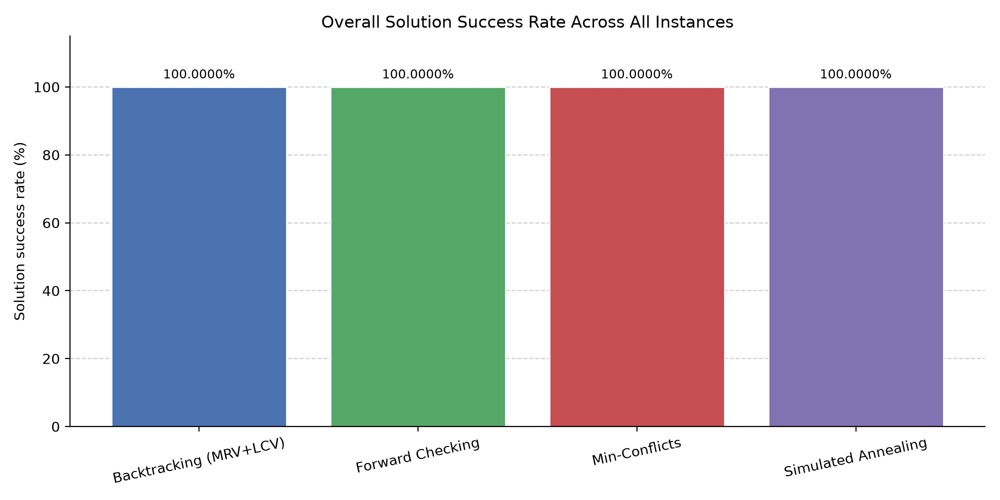
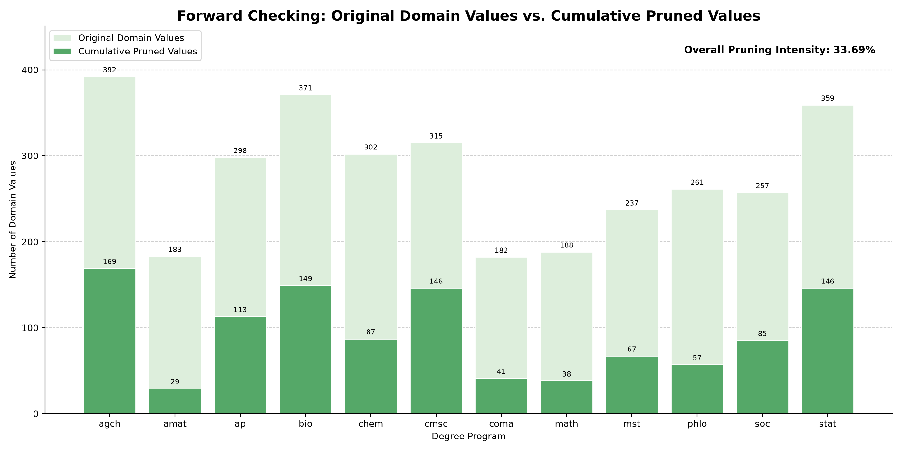
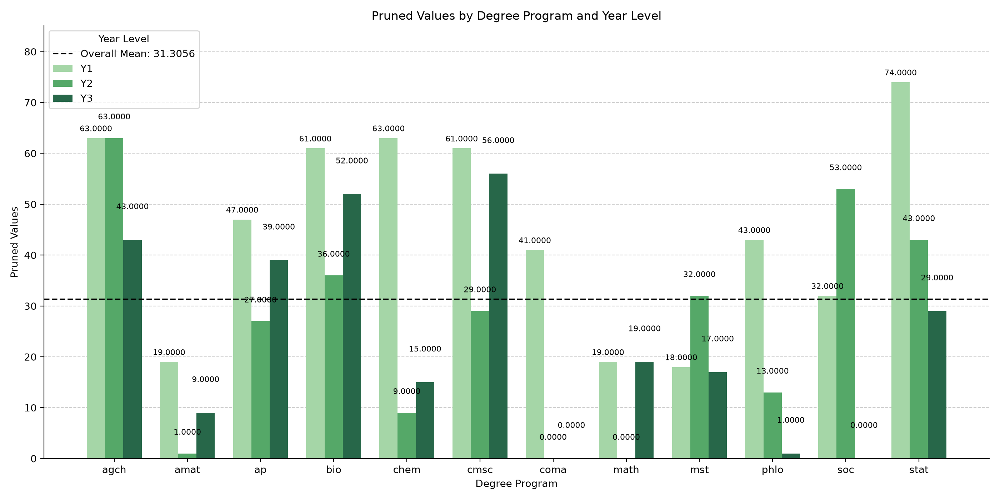
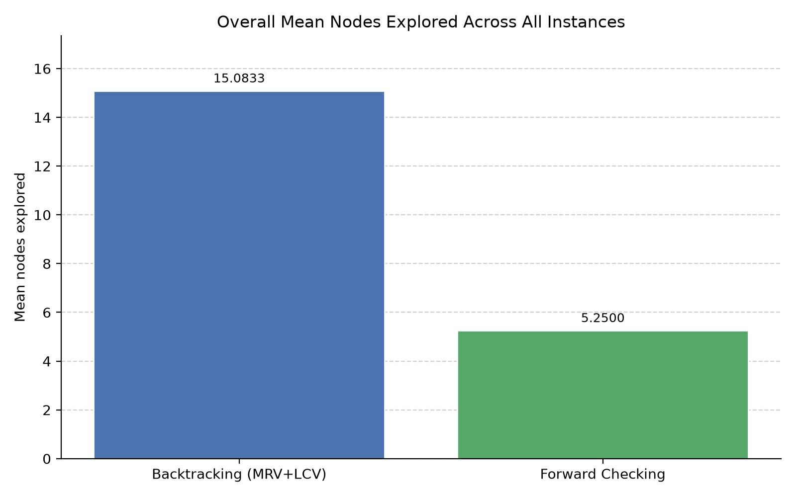
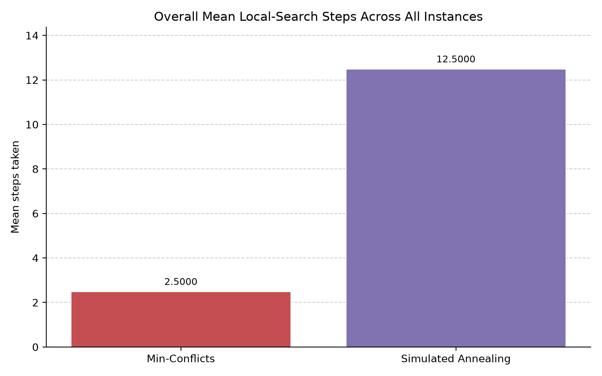
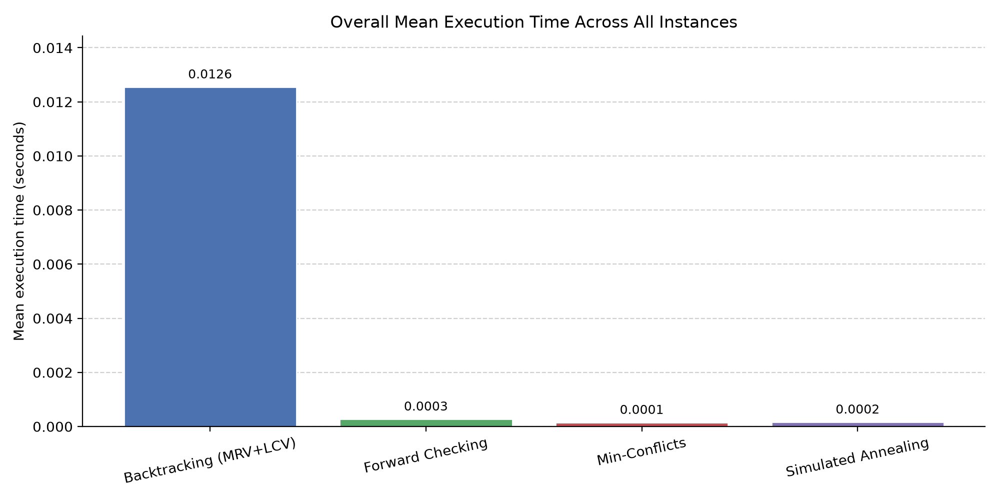

Problem Statement & Motivation
Creating a university class schedule is challenging because students must consider many factors at once: the available class sections for each course, lecture and laboratory schedules, overlapping meeting times, curriculum requirements, and course eligibility. Selecting sections by hand is tedious and error-prone, especially when several courses each have many possible section combinations.
We formulate student class scheduling as a Constraint Satisfaction Problem (CSP): given a curriculum for a particular year and semester, assign one class bundle (a LEC+LAB pair) to each required course slot so that no two bundles have overlapping meeting times.
Objectives
- Automate the generation of student class schedules.
- Reduce the tedious process of manually identifying compatible class sections.
- Explore how different AI search techniques solve the same scheduling problem.
- Determine which algorithm gives the best balance of solution quality, speed, and efficiency.
Dataset
Source and scraping
Raw class data was collected from the UPLB Academic Management Information System
(AMIS) through its student-facing REST API using GET requests only;
no enlistment or modification of any data was performed. Instructor names and user IDs
were stripped at scrape time, and only the numeric faculty_id was kept to
comply with privacy requirements.
Curricula covered
BS Agricultural Chemistry, BS Applied Mathematics, BS Applied Physics, BS Biology, BS Chemistry, BS Computer Science (2018), BA Communication Arts, BS Mathematics, BS Mathematics & Science Teaching, BA Philosophy, BA Sociology, and BS Statistics. Academic term: 1261 (First Semester, A.Y. 2026–2027).
| Item | Value |
|---|---|
| Raw scraped class sections | 4,719 across 44 subjects |
| Section types | 3,891 LEC / 828 LAB |
| Sections without meeting times (excluded) | 1,997 |
| Bundles constructed | 4,466 |
| Usable bundles (schedulable, no TBA, no self-conflict) | 2,475 |
| CSP instances (year–term combinations) | 42 |
CSP formulation
| Element | Description |
|---|---|
| Variable | A curriculum slot (e.g. Y3FS-1 → CMSC 124) |
| Domain | All usable LEC+LAB bundles for that course (after the runtime filters below) |
| Constraint | No two assigned bundles may have overlapping meeting times |
Preprocessing
The raw JSON pages were processed by build_datasets.py using only the Python
standard library. Each class row was parsed into one of two section types: LEC
(standalone) or LAB (paired with a parent LEC). Meeting times were converted from
12-hour clock strings to integer minutes after midnight to simplify overlap checking.
A LEC+LAB pair was bundled into a single schedulable unit, and standalone LEC sections
without a LAB were treated as their own bundle. Bundles were marked unusable if they had
no meeting times (TBA), contained an internal time conflict between their own LEC and
LAB blocks, or required instructor or dean consent. The solvers operate only on usable
bundles and filter further at runtime using the require_open_slot and
allow_consent flags in evaluate.py.
Methods
Two complete (systematic) methods and two local search methods, all written from scratch with the Python standard library.
Backtracking with MRV + LCV
A complete search that recursively assigns values to variables and undoes assignments when a constraint is violated (Russell & Norvig, 2021). MRV (Minimum Remaining Values) picks the most constrained slot first to expose dead ends early. LCV (Least Constraining Value) tries the bundle that rules out the fewest options for the remaining slots.
Forward Checking (MRV + FC)
Extends backtracking by removing conflicting values from the domains of unassigned neighbor variables after each assignment (Williams, 2010). If any domain becomes empty it backtracks immediately, so failures are detected sooner than in plain backtracking.
Min-Conflicts
A local search repair heuristic. It starts from a complete random assignment and repeatedly reassigns a conflicted slot to the bundle that causes the fewest conflicts, breaking ties randomly (Minton et al., 1992). Very fast on highly satisfiable instances, but it can get stuck in local minima on tightly constrained ones.
Simulated Annealing
A stochastic local search that also starts from a random complete assignment, but accepts worse moves with probability e−Δ/T while the temperature T cools geometrically (CP-Algorithms, 2026). Because of this randomness, different runs on the same input can give different outcomes.
Experimental Setup
Hardware and software
| Operating system | Windows 11 (version 26H2, build 26300.9974) |
| Processor | 13th Gen Intel Core i5-13420H (2.10 GHz) |
| RAM | 16.0 GB |
| Python | 3.12.5 |
Problem instances
The four methods were evaluated on CSP instances from 12 curricula within CAS. Each instance is one year level of the First Semester (Year 1, 2 or 3), so instances differ in the number of curriculum slots and the size of their domains, which allows a controlled comparison across problem scales. For example, the BS Computer Science (2018 curriculum) SP track gives:
| Instance | Year | Term |
|---|---|---|
| Y1 FS SP | Year 1 | 1261 – First Semester |
| Y2 FS SP | Year 2 | 1261 – First Semester |
| Y3 FS SP | Year 3 | 1261 – First Semester |
Settings applied uniformly to every run:
require_open_slot = False: sections with no available seats stay in the domain.allow_consent = False: sections requiring instructor or dean consent are excluded.
Data splits and reproducibility
Scheduling is a CSP, so no model is trained and there is no train/test split. Each run is a single solve attempt on a complete instance. Backtracking and Forward Checking are deterministic and were run once per instance. The local search methods used fixed random seeds, 42 for Min-Conflicts and 99 for Simulated Annealing, so results can be reproduced.
Evaluation metrics (implemented from scratch)
| Metric | What it measures | Applies to |
|---|---|---|
| Nodes explored | (slot, bundle) assignments tried | Backtracking, Forward Checking |
| Steps taken | Re-assignment iterations | Min-Conflicts, Simulated Annealing |
| Domain values pruned | Entries removed by forward checking | Forward Checking |
| Wall-clock time | End-to-end solve time via time.perf_counter() | All methods |
| Solution found | Whether a conflict-free schedule was produced (YES/NO) | All methods |
Hyperparameters
| Method | Parameter | Value |
|---|---|---|
| Min-Conflicts | max_steps / max_restarts / seed | 50,000 / 30 / 42 |
| Simulated Annealing | T_start / alpha / T_min | 1.0 / 0.9995 / 0.001 |
| Simulated Annealing | max_steps / max_restarts / seed | 50,000 / 20 / 99 |
Results
Each method was measured on whether it found a solution, how much search effort it needed (nodes explored or steps taken), and its wall-clock time. All values below are means over the evaluated instances.
Interactive schedule viewer
See the actual weekly timetable produced by each of the four methods, rendered in the style of AMIS.
Solution found

All four methods produced a valid schedule for every instance. The scheduling problem for the 12 tested curricula is therefore highly satisfiable given the available section offerings, and no method failed on any instance.
Domain values pruned by Forward Checking

Forward Checking removed a substantial share of inconsistent values before backtracking became necessary. Summing the per-program bars in Figure 2 gives 1,127 pruned values out of 3,345 original domain values, or 33.69%. Pruning was heaviest for Agricultural Chemistry (169 values) and lightest for Applied Mathematics (29) and Mathematics (38).

Nodes explored and steps taken

Among the complete methods, Forward Checking explored fewer nodes than Backtracking, about 66.47% fewer on average:
(15.3529 − 5.1471) / 15.3529 × 100 ≈ 66.47%

Among the local search methods, Min-Conflicts needed 79.01% fewer steps than Simulated Annealing on average:
(10.0882 − 2.1176) / 10.0882 × 100 ≈ 79.01%
Wall-clock time

Backtracking with MRV + LCV had the highest execution time (about 10.9 ms on average). Min-Conflicts and Simulated Annealing were the fastest (about 0.1 ms), with Forward Checking very close behind (about 0.2 ms).
Table 1. Speedup of each method relative to Backtracking (Backtracking time ÷ method time).
| Curriculum | Forward Checking | Min-Conflicts | Simulated Annealing |
|---|---|---|---|
| Agricultural Chemistry | 79.8x | 111.8x | 62.1x |
| Applied Mathematics | 15.6x | —* | 78.0x |
| Applied Physics | 27.1x | 38.7x | 90.3x |
| Biology | 64.7x | 64.7x | 56.6x |
| Chemistry | 46.2x | 254x | 254x |
| Computer Science | 26.7x | 58.8x | 22.6x |
| Communication Arts | 104.6x | 523x | 523x |
| Mathematics | 11.4x | 26.7x | —* |
| Mathematics & Science Teaching (Math track) | 20.7x | 23.3x | 17.0x |
| Philosophy | 55.2x | 331.0x | 331.0x |
| Sociology | 54.7x | 255.3x | 255.3x |
| Statistics | 39.0x | 46.8x | 468.0x |
| Overall | 54.5x | 109.0x | 109.0x |
*Instances marked "—" ran in under 0.0001 s, so the runtime was not recorded and the speedup cannot be computed.
Results by Curriculum
Choose a curriculum to see the per-instance figures for each of the four methods. Click a figure to open it at full size.
Discussion
Why Forward Checking beats plain Backtracking
Forward Checking prunes the domains of unassigned slots after every assignment, so it detects dead ends before descending into them. That is why it explored about two thirds fewer nodes on average. In several instances (for example Applied Mathematics Y2 and Y3, and Communication Arts Y2) the two methods explored the same number of nodes. In those instances the first choices already led to a solution, so there was little to prune.
Why Backtracking is the slowest
Backtracking pays for both MRV and LCV at every step. LCV in particular has to count how many options each candidate bundle would remove from the other slots, and that work grows with the domain size. On these small, easy instances the extra ordering effort is not repaid by a smaller search, which explains why it recorded the highest execution time.
Why local search is so fast here
Min-Conflicts and Simulated Annealing start from a complete assignment and repair it, so they avoid the exponential worst case of systematic search. Because every instance is highly satisfiable, a random starting assignment is often only a few moves from a valid one. Min-Conflicts was more efficient than Simulated Annealing on average because it always repairs a conflicted slot with its best available bundle. Simulated Annealing instead proposes moves at random and may accept worse ones while the temperature is high, which costs extra steps. On individual instances this was not always the case: Simulated Annealing needed fewer steps than Min-Conflicts in a few of them, as the per-curriculum figures show.
Limitations
- Every method solved every instance, so the experiment cannot show where the methods break down. Differences are limited to speed and search effort.
- Local search is incomplete. Its 100% success rate here reflects how easy the instances are, not a guarantee.
- The CSP encodes only hard time-conflict constraints. Preferences such as instructors, travel time, or free periods are not modeled.
- Runtimes are tens of microseconds to milliseconds, so timing is sensitive to machine noise. Local search used a single fixed seed per method, not many runs.
- Only term 1261 and the First Semester of Years 1–3 were evaluated.
Possible improvements
Test tighter instances, for example requiring open seats only, so that the methods differ in robustness. Run the local search methods over many seeds and report the mean and spread. Add arc consistency (AC-3) before search, and encode preferences such as preferred time slots, minimum free periods, or load balancing across days as soft constraints in an optimization objective.
Conclusion
This project formulated UPLB student class scheduling as a Constraint Satisfaction Problem and implemented four AI search methods from scratch (Backtracking with MRV + LCV, Forward Checking with MRV + FC, Min-Conflicts, and Simulated Annealing) to generate conflict-free weekly schedules from real AMIS data.
All four methods found a valid schedule for every instance, confirming that scheduling for the 12 tested CAS curricula is highly satisfiable given the available section offerings. Among the complete methods, Forward Checking explored on average 66.47% fewer nodes than Backtracking. Among the local search methods, Min-Conflicts needed on average 79.01% fewer steps than Simulated Annealing. Backtracking was the slowest in wall-clock time, while Min-Conflicts and Simulated Annealing were the fastest, often finishing in under 0.1 ms.
For well-satisfiable instances like these, Forward Checking is the most suitable complete method, since it keeps the guarantee of finding a solution while greatly reducing the search. Min-Conflicts is the best local search method, although its lack of completeness means it may not find a solution on harder, more tightly constrained instances. We have not yet found an instance where any method failed, so testing on tighter instances is the natural next step.
References
- Berkeley CS 188. (n.d.). 2.4 Ordering. Introduction to Artificial Intelligence. University of California, Berkeley. inst.eecs.berkeley.edu/~cs188/textbook/csp/ordering.html
- CP-Algorithms. (2026, May 24). Simulated annealing. Algorithms for Competitive Programming. cp-algorithms.com/num_methods/simulated_annealing.html
- GitHub – ravenjohn/scheda.js: Draw a weeklong schedule using HTML5 canvas. (n.d.). MIT License. github.com/ravenjohn/scheda.js. Used for the schedule visualization on this project page.
- Kurz University Computer Science. (2026, September 6). Backtracking search and forward checking. Kurz University. university.kurz.fyi/…/backtracking-search-and-forward-checking
- Minton, S., Johnston, M. D., Philips, A. B., & Laird, P. (1992). Minimizing conflicts: A heuristic repair method for constraint satisfaction and scheduling problems. Artificial Intelligence, 58(1–3), 161–205. doi.org/10.1016/0004-3702(92)90007-K
- Norvig, P. & Russell, S. (2021). Artificial intelligence: A modern approach (4th ed.). aima.cs.berkeley.edu
- Williams, B. C. (2010, September 27). 16.410 lecture 06: Solving constraint programs using backtrack search and forward checking [Lecture slides]. MIT OpenCourseWare. ocw.mit.edu/courses/16-410-…/MIT16_410F10_lec06.pdf
- UPLB Academic Management Information System (AMIS). Class section data for term 1261, collected with read-only GET requests.
- AI tool disclosure: Claude (Anthropic) was used to assist with debugging and with generating boilerplate code for
export_schedule.py,Schedule.html, and this project page. All solver logic (csp.py,backtracking.py,forward_checking.py,min_conflicts.py,simulated_annealing.py) was written by the group. Every line of generated code was reviewed and can be explained by team members.